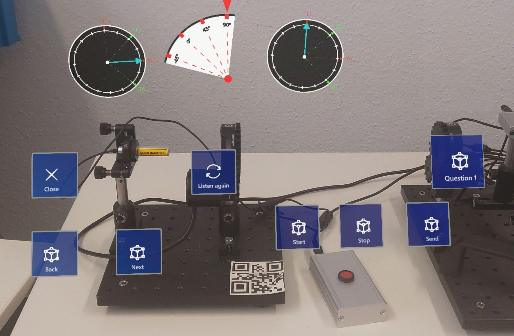
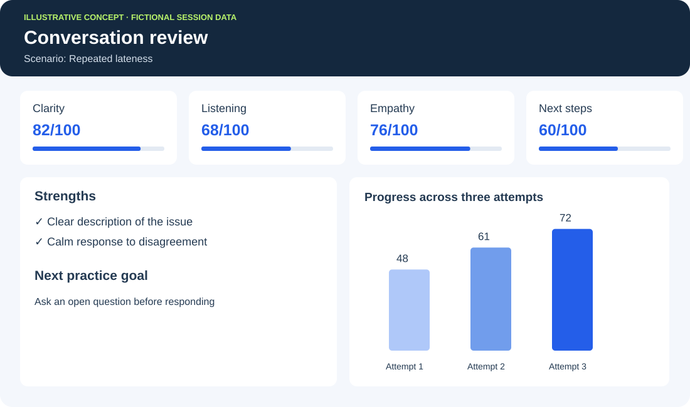

AI-Based Personalised Learning
My work
Built a voice tutor that listens to answers, gives individual feedback and invites a revised attempt.
Workplace use
Voice coaching and role-play with feedback against job-specific criteria.
Project video
Project image

Role-play and feedback
Example role-play interface and feedback dashboard.


Example and evaluation
Example application
A manager practises addressing repeated lateness. The AI plays a defensive employee. Afterwards, the report evaluates clarity, listening, empathy and agreement on next steps. The manager repeats the conversation with a specific improvement goal.
How I would evaluate value
Measure scenario performance and improvement across attempts. Where workplace data is available, test links to customer satisfaction or first-contact resolution.